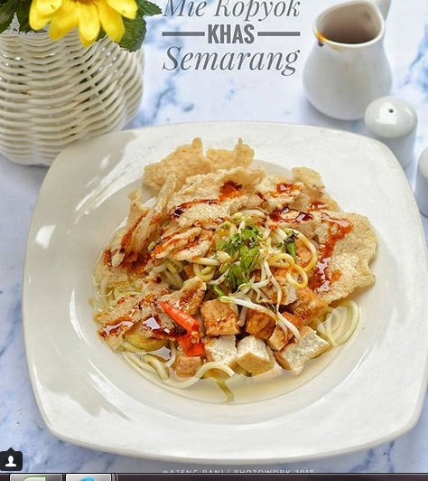

Bahan-bahan
- 1 bungkus mie burung dara, rebus, sisihkan
- 150 gram taoge
- 4 buah lontong potong-potong
- 4 siung bawang putih, dihaluskan
- 1 sdt garam
- 200 ml air
- 1000 ml air kaldu ayam
- 1 sdt kaldu ayam bubuk
- 1 bungkus ladaku
- 4 buah tahu potong dadu goreng setengah matang
- 1 batang seledri iris tipis
- 3 siung bawang merah, iris tipis dan goreng
- 4 buah krupuk gendar, diremah kasar
- 2 sdm kecap manis
Cara Membuat
- Kuah, rebus air kaldu hingga mendidih. Masukkan kaldu ayam bubuk, merica. Aduk rata. Sisihkan
- Tata bumbu, mie, taoge,(taoge rendam sebentar dg air kaldu panas smpai setengah layu), lontong dan tahu dipiring. Siram kuah
- Taburi seledri, bawang goreng, krupuk gendar, tambahkan kecap manis.